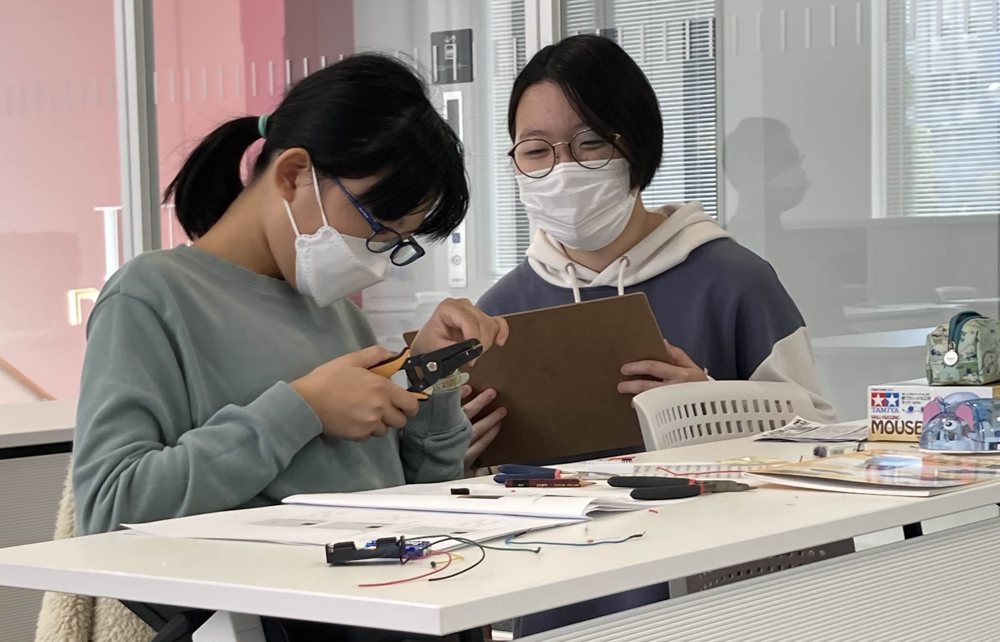

学ぶ側、教える側、どちらも学べる環境作りを



About EDTC
- Engineering
「工学」の知識が豊富な学生団体 - Dispatch
学生ならではの「迅速な派遣」 - Teacher
学生の知識を「教える」活動 - Company
「企業」のような活動体制
私たちKAIT EDTC（カイト エドテック）は、自分の知識を誰かに教えることで成長する学生団体です。
神奈川工科大学（KAIT）に属しており、「小、中、高校生」を対象にロボット製作やプログラミングなど、モノづくりの楽しさを広めています。
EDTCで提供するものはいずれも、学生が自主的に開発・企画・運営をしているものです。
About EDTC
- Engineering
神奈川工科大学（KAIT）に属しており、「工学」の知識が豊富な学生団体です。 - Dispatch
学生ならではの「迅速な派遣」により、より早く需要にこたえた授業展開イベント参加を目指します。 - Teacher
学生の作った教材を使った「教える」活動を行っています。 - Company
EDTC内部は企画・総務・広報・人事・営業の5つの部署に分かれています。「企業」のような活動体制により、各部署で役割分担をしより進化する団体運営を心掛けています。
EDTC紹介動画
このホームページや動画もメンバーが作成しています。
NEWS
- 2024.10.19 第七回遊行塾に行きました
- 2024.10.13
- 2024.06.22 第五回遊行塾に行ってきました
- 6/29 神奈川工科大学見学体験ツアーを行いました
- 7/11 地域連携サークル交流会に参加しました